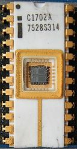

2.10.9. Компьютерные ПЗУ
Компьютерные микросхемы ПЗУ классифицируют:
- По технологии изготовления кристалла:
- ROM — (англ. read-only memory, постоянное запоминающее устройство), масочное ПЗУ, изготавливается фабричным методом. В дальнейшем нет возможности изменить записанные данные.
- PROM — (англ. programmable read-only memory, программируемое ПЗУ (ППЗУ)) — ПЗУ, однократно «прошиваемое» пользователем.
- EPROM — (англ. erasable programmable read-only memory, перепрограммируемое ПЗУ (ПППЗУ)). Например, содержимое микросхемы К537РФ1 стиралось при помощи ультрафиолетовой лампы. Для прохождения ультрафиолетовых лучей к кристаллу в корпусе микросхемы было предусмотрено окошко с кварцевым стеклом.
- EEPROM — (англ. electrically erasable programmable read-only memory, электрически стираемое перепрограммируемое ПЗУ). Память такого типа может стираться и заполняться данными несколько десятков тысяч раз. Используется в твердотельных накопителях. Одной из разновидностей EEPROM является флеш-память (англ. flash memory).
- ПЗУ на магнитных доменах, например К1602РЦ5, имело сложное устройство выборки и хранило довольно большой объём данных в виде намагниченных областей кристалла, при этом не имея движущихся частей (см. Компьютерная память). Обеспечивалось неограниченное количество циклов перезаписи.
- NVRAM, non-volatile memory — «неразрушающаяся» память, строго говоря, не является ПЗУ. Это ОЗУ небольшого объёма, конструктивно совмещённое с батарейкой. В NVRAM современных ЭВМ батарейка уже конструктивно не связана с ОЗУ и может быть заменена.
- По виду доступа:
- С параллельным доступом (parallel mode или random access): такое ПЗУ может быть доступно в системе в адресном пространстве ОЗУ. Например, К573РФ5;
- С последовательным доступом: такие ПЗУ часто используются для однократной загрузки констант или прошивки в процессор или ПЛИС, используются для хранения настроек каналов телевизора, и др. Например, 93С46, AT17LV512A.
- По способу программирования микросхем (записи в них прошивки):
- Непрограммируемые ПЗУ;
- ПЗУ, программируемые только с помощью специального устройства — программатора ПЗУ (как однократно, так и многократно прошиваемые). Использование программатора необходимо, в частности, для подачи нестандартных и относительно высоких напряжений (до +/- 27 В) на специальные выводы.
- Внутрисхемно (пере)программируемые ПЗУ (ISP, in-system programming) — такие микросхемы имеют внутри генератор всех необходимых высоких напряжений, и могут быть перепрошиты без программатора и даже без выпайки из печатной платы, программным способом.
Применение ПЗУ
В постоянную память часто записывают микропрограмму управления техническим устройством: телевизором, сотовым телефоном, различными контроллерами, или компьютером (BIOS).
BootROM — прошивка, такая, что если её записать в подходящую микросхему ПЗУ, установленную в сетевой карте, то становится возможна загрузка операционной системы на компьютер с удалённого узла локальной сети. Для встроенных в ЭВМ сетевых плат BootROM можно активировать через BIOS.
ПЗУ в IBM PC-совместимых ЭВМ располагается в адресном пространстве с F600:0000 по FD00:0FFF
9